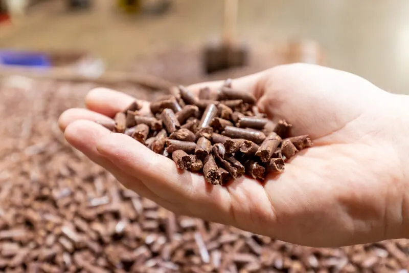

What comes out the other end.
Recovery only counts if the material goes somewhere. These are the products we supply from recovered timber — and the reason we can keep taking it in.

Graded, repaired, ready to load.
Recovered pallets assessed for structural integrity, repaired where needed and graded before they go back out. If you buy pallets regularly, talk to us before you order new ones.

Shredded, screened, by the load.
Timber mulch for landscaping, civil works, site cover and general use. Standard grade, plus oversize chip from wood chipping where a coarser product suits the job better.
Residue with somewhere to go.
Offcuts, chippings, sawdust and pallet residues processed into feedstock for renewable energy and industrial reuse — material that would otherwise have been buried.

Fibre for paper and board. Timber that's still timber.
Processed fibre for paper and board manufacturing, and recovered timber where the material is sound enough to be used again as timber rather than reduced to chip.
Supply depends on what comes in.
We're a recovery business, so our output reflects our intake. For ongoing or contracted supply, talk to us about volumes and timing and we'll tell you honestly what we can commit to rather than promise a number we can't hold.
Looking to buy, not just dispose?
Tell us what you need, how much and how often. We'll come back on availability, grades and pricing.